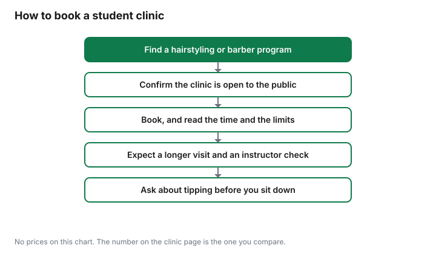

Personal Care · Canada
Beauty School and Barber School Discounts in Canada: Cheap Haircuts, Colour and Facials
Beauty and barber school clinics in Canada offer cheaper haircuts, colour and facials done by students under an instructor. Book only where the school’s page says the public can book, and expect a longer visit. A student clinic is a class that takes clients. The price, if the school posts one, is the price of a lesson with an instructor in the room, not a secret rating of the campus. People miss it because the booking page sits on a college or academy site, not on a salon map. This guide is how to find a public clinic in Canada, what the appointment is like, and which services to start with. Quality is not scored. There is no affiliate offer on this page.
Key takeaways
- Book only where the page says the public can book. A program that trains stylists is not automatically a clinic.
- Expect a longer visit and an instructor check. The time on the booking page is the block you clear.
- Start with a trim, a fringe, a basic facial, or a polish. Skip a large colour change and any chemical service you have not patch-tested.
- Ask before you sit down. Some clinics post that tips are not accepted.
- A brand education night or a model call is the same test: time, supervision, and the price on that posting. No brand event was priced here.
How student clinics work: supervised services at lower prices
The model is a student performing a service while an instructor checks the work. Schools set the price, when they publish one, because the hour is teaching time.
That is why the locked heading talks about lower prices. This guide does not cite a clinic fee schedule, so it does not say lower than what, or by how much. The comparison you can actually make is the number on that clinic’s page against the receipt from the shop you use now, for the same kind of service. Put the winner on the haircut line of a zero-based budget.
Supervision is the other half of the model. Before you book, read who is allowed to do the service and when the instructor looks. If the page does not say, ask. A lower posted price without a check is not the clinic this section is describing. The haircut cost guide is how to turn one visit into a year. A clinic visit counts as one of those visits only if you would have paid for that cut anyway.
What to expect: time, results and instructor checks
Plan for a longer appointment than the same service in a working shop. The student is learning the steps, and the instructor may stop the work to correct it.
This guide does not cite a standard length in minutes. Use the length the booking page prints, and do not stack the visit against a flight or a shift you cannot move. Results vary with the student’s level and with how clearly you described the cut. Bring a photo of the length you want if that helps you say it. A photo is a description, not a contract.
An instructor check is part of the service you are buying. Ask when it happens: after a section, at the end, or both. If you are unhappy before the check, say so while there is still time to adjust. Leaving silently and booking a repair the next day is two appointments. Neutral framing matters here. A student cut can be the cut you wanted. It can also be a cut you ask them to stop. Neither outcome is a review of the college.
Services to try and ones to skip
Try a service you already understand and can judge in the mirror: a trim that keeps the shape, a fringe, a beard line, a basic facial, or a polish. Those are easier to stop if the direction is wrong.
Colour, a chemical straightener, and a dramatic change are higher stakes because the grow-out or the correction is another bill. The home colour guide has Health Canada’s patch-test steps. Use them before a student colour as well, if the product calls for a test. This page is not medical advice.
Skip anything the instructor says is outside the student’s level that day, even if you wanted it. Skip a service on the day of an event. Skip a clinic that will not say whether an instructor is present. The table is expectations, not a menu of prices.
| Service | Reasonable first try | What to expect |
|---|---|---|
| Cut or trim | Yes, if you can describe the length | Longer than a shop visit. An instructor check. Results depend on the student’s level |
| Colour | Only a small change you can live with | More time. Patch-test if the product requires it. A correction is a different appointment |
| Facial | A basic facial, not a treatment for a condition | Tell them about sensitive skin. This is not dermatology |
| Nails | A simple polish or care you already know | Ask what the student is practising that day. Leave if the tools do not look clean to you |
Finding colleges and academies with public clinics
Search the public college, cégep, or career college in your area, plus the words for the program: hairstyling, barbering, esthetics, or the French coiffure and esthétique. Add clinic, student salon, or clinique.
Open the page and confirm it invites the public to book. A program page that only describes courses is not a clinic. A private academy counts only when its own page says clients can book, and you can see who supervises.
Do not rely on a directory this guide does not cover. No college is named here. Regulations for the trade differ by province, and this guide does not cite a provincial register, so it does not tell you which title is compulsory where you live. If you want that check, use your province’s own page for the trade. The table is a search, not a list of schools.
| Where you look | Search words | The test |
|---|---|---|
| Public college or institute | Hairstyling, barbering, or esthetics, plus clinic or student salon | The page says the public can book |
| Cégep or French-language program | Coiffure or esthétique, plus clinique | The page invites clients, not only enrolled students |
| Private academy | The academy’s name plus student salon or clinic | Supervision is described, and the price is on that page if they charge one |
| Your province’s trade page | The official name of the hairstyling or barbering trade | Use it to see how the trade is described. It may not list clinics |
Booking tips and tipping etiquette
Book the service by its name, not by “whatever is cheapest.” Read the cancellation rule before you reserve. Arrive with clean hair if the page asks for it, and say so if you are pregnant, have a scalp condition, or have had a reaction to a colour product.
The clinic is not your doctor. Those facts change what a student should attempt. If you are booking around a trip, the travel-with-teens guide is the trip. Do not put a student colour on the morning you fly.
Tipping: ask when you book. Some schools post that students cannot accept tips. Some leave a jar for the class. If the page is silent, ask before the service, not after you have your coat on. A tip you do leave belongs in the visit price when you compare the clinic with a shop. A tip you were told not to leave is zero.
Other training discounts: brand education nights and model calls
A brand education night is a session where a trainer demonstrates a product on models, often at a lower posted price or for free. A model call is the same idea from a school or a photographer: your hair or face is the lesson.
Read what you are agreeing to. You may not choose the colour. You may wait longer than a clinic booking. You may need to stay for the whole demonstration. The price on the posting is the price. A free service that you then pay to correct is not free.
Treat these the way you treat a subscription you did not mean to keep. One night is one event. A card on file for a product you did not ask to repurchase is a different problem, and the household cap guide is where repeating charges belong.

Sources
- No school is named and no fee is quoted.
- Ask the clinic.
Frequently asked questions
Are beauty school haircuts cheaper?
They are priced as lessons, and the number that matters is the one on that clinic’s own page. This guide does not cite a live clinic price list, so it does not say how much cheaper, or that every clinic is cheaper than the salon you already use. Write the clinic’s posted price next to your last salon receipt, including any tip the clinic accepts.
Are student haircuts safe and supervised?
A public clinic is a class with a client, not a shop that happens to be inside a school. Ask, before you book, who is in the room and when an instructor checks the work. This guide does not cite a national safety statistic, and it is not a promise about a particular student. If you are not comfortable with a learner doing that service, book a different service or a different shop.
How long does a student appointment take?
Longer than the same service at a working salon, because the cut or colour is also a demonstration and a check. This guide does not cite a standard number of minutes. Read the time printed on the booking page, leave that block free, and do not book a student colour on the afternoon of an event.
Should I tip at a beauty school clinic?
Ask when you book. Some clinics post that tips are not accepted, and some leave a jar. If the page is silent, ask before the service starts so you are not guessing at the chair. A tip is part of the price only when you actually leave one.
What services should I try at a beauty school?
Start with a service you already understand: a trim, a fringe, a basic facial, or a polish, and read what the student is allowed to do that day. Skip a large colour change, a chemical service you have not patch-tested, and anything the instructor says is past the student’s level. The home-colour guide has Health Canada’s patch-test steps if colour is the service.
Researched and drafted with AI assistance and fact-checked against official Canadian sources. How we create content.